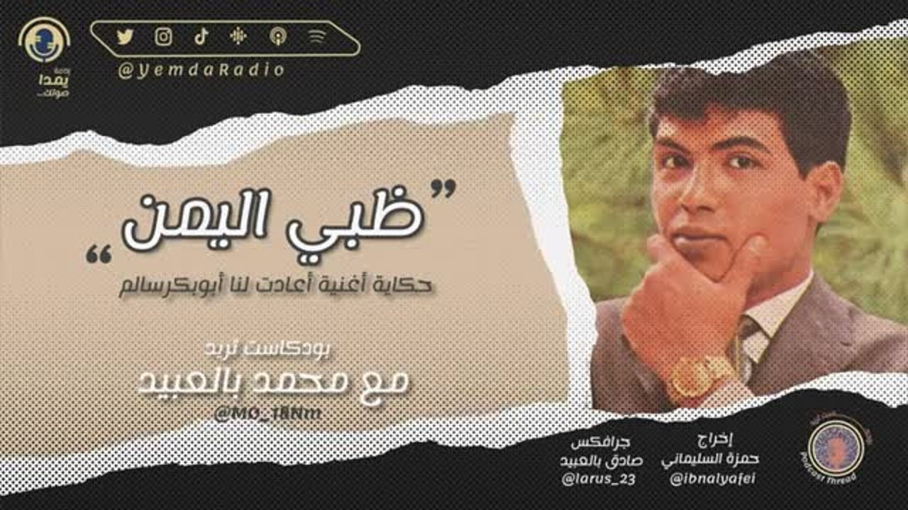

Story in several forms · 2022حكاية بأشكال عدة · 2022
“Dhabyi Al-Yemen”«ظبي اليمن»
One story, several forms. An interview detail became a researched thread, then a podcast adaptation requested directly, then a longer written treatment.حكاية واحدة بأشكال متعددة. تفصيلة في مقابلة صارت سلسلة موثّقة، ثم تحويلًا إلى بودكاست طُلب مباشرة، ثم معالجة مكتوبة أطول.

A short passage in an interview.فقرة قصيرة في مقابلة.
I was watching an interview with Ahmed Fathi when a short passage about the song caught my attention. A detail in a talk is easy to let pass. I stopped at it and asked why it felt important.كنت أشاهد مقابلة مع أحمد فتحي حين استوقفتني فقرة قصيرة عن الأغنية. التفصيلة في الحديث يسهل تركها تمر. توقفت عندها وسألت: لماذا تبدو مهمة؟
Before turning it into a story I checked. I went over the chronology of Abu Bakr Salem’s absence from singing, and I looked for a second account that could confirm or complicate what I had heard. Only then did the detail become a thread.وقبل أن أحوّلها إلى حكاية تحققت منها. راجعت التسلسل الزمني لغياب أبي بكر سالم عن الغناء، وبحثت عن رواية ثانية تؤكد ما سمعته أو تعقّده. وبعد ذلك فقط صارت التفصيلة سلسلة.
The same story took five shapes.الحكاية نفسها اتخذت خمسة أشكال.
Interview detailتفصيلة في مقابلة
A small clue.خيط صغير.
Verifyتحقق
Chronology and a second account.التسلسل الزمني ورواية ثانية.
Threadسلسلة
A public story, June 2022.حكاية عامة، يونيو 2022.
Podcastبودكاست
A spoken adaptation, requested directly.تحويل مسموع طُلب مباشرة.
Articleمقال
A long-form afterlife.حياة لاحقة بشكل مطوّل.
The useful evidence is not virality. It is that the story itself prompted a concrete request to become another form.الدليل المفيد ليس الانتشار، بل أن الحكاية نفسها استدعت طلبًا محددًا بأن تصير شكلًا آخر.
The pattern predates the lab.النمط سابق للمختبر.
This story came before the Hadhramout Song Lab, and it already followed the same moves: encounter, pause, verify, connect, then return. The lab later added rules for evidence, uncertainty and field verification. It did not replace the instinct. It gave it a stop rule.سبقت هذه الحكاية مختبر الأغنية الحضرمية، وكانت تسير أصلًا على الحركات نفسها: ألتقي، أتوقف، أتحقق، أصل، ثم أعود. ثم أضاف المختبر قواعد للدليل وعدم اليقين والتحقق الميداني. لم يحل محل الحدس، بل منحه قاعدة للتوقف.
The podcast episodeحلقة البودكاست
Read the method behind this on the home page, or the research project it grew into.يمكنك قراءة المنهج خلف هذه الحكاية في الصفحة الرئيسية، أو المشروع البحثي الذي نمت إليه.